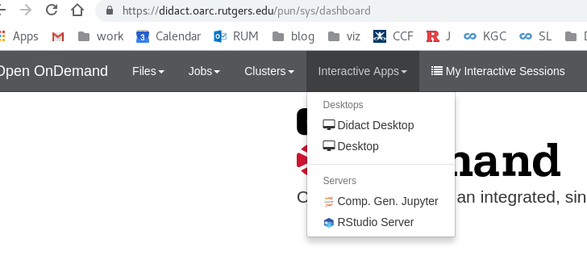
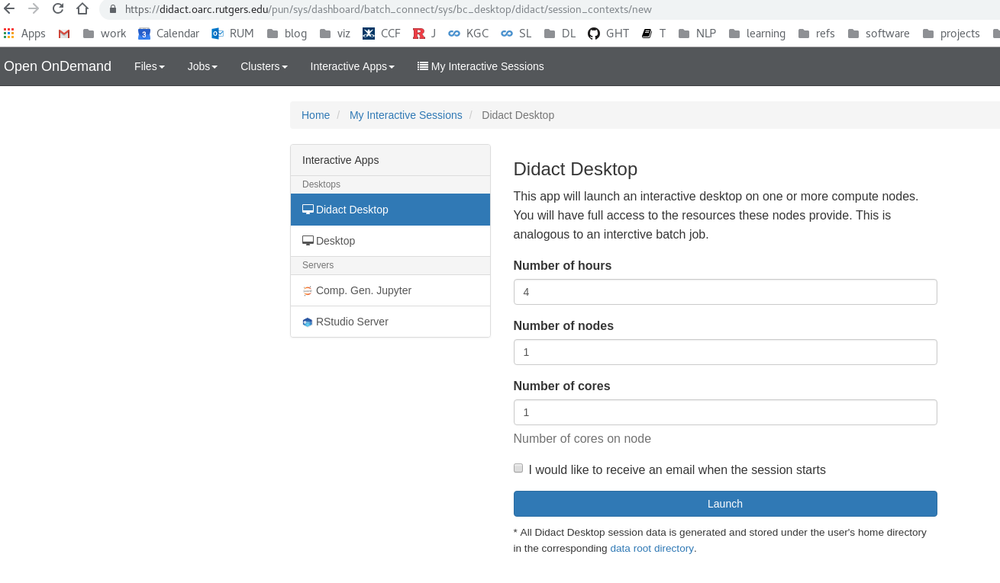
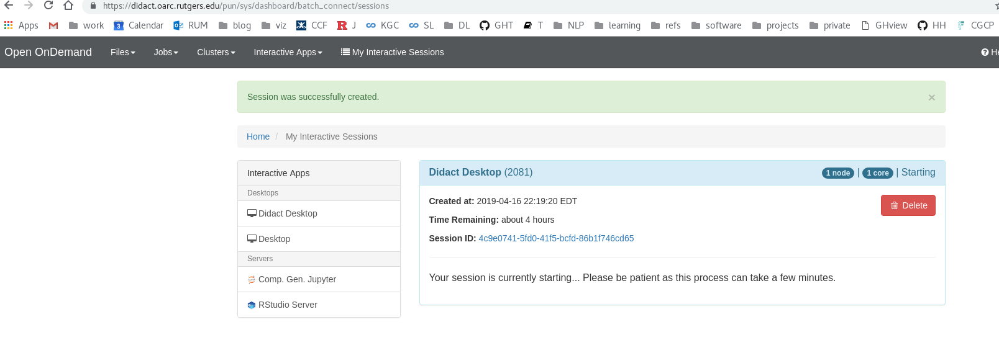
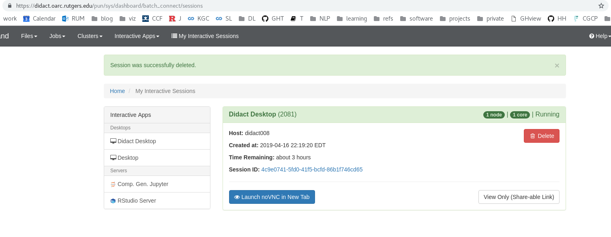
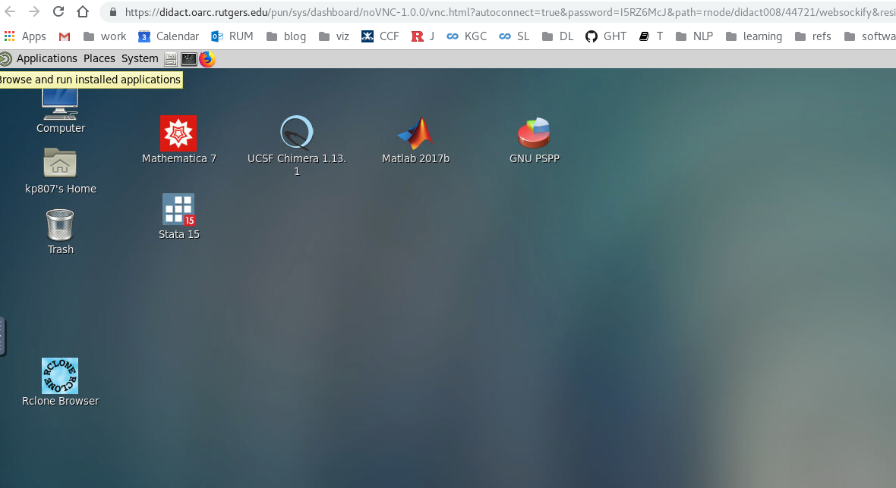

Didact - teaching cluster
didact is a small cluster dedicated to teaching classes. There will be no maintenances during the semesters and all upgrades and updates will be done depending on academic schedule so as not to interfere with classes. didact consists of 8 machines with 16 cores each. It has a separate filesystem from the general Amarel cluster. (See also https://ask.oarc.rutgers.edu/question/35/what-are-the-differences-between-didact-and-amarel/)
How to connect to didact?
To connect to didact, just open your browser and this link: https://didact.oarc.rutgers.edu (you must be connected to VPN, otherwise it will show up as "Page not found"). Use your netid and password to login (note: you must have an Amarel account. If you are part of a class teaching on didact, this will be provided to you.) OARC does not administer netids and passwords - we get the authentication from the central authentication service at Rutgers.
How to launch a desktop on didact?
If you are used to apps.rutgers.edu, you will find Didact Desktop familiar. Here is the series of instructions how to launch a desktop:
- login to https://didact.oarc.rutgers.edu
- Go to Interactive Sessions
- Click Didact Desktop
- Click "Launch" (wait up to 30 seconds until your environment is ready and the blue button appears on the bottom)
-
Click "Launch noVNC in New Tab"
-

- 
- 
- 
- 
What else can you launch on didact?
- Jupyter notebook (with python 3.6)
- RStudio
How is didact different from apps.rutgers.edu?
- It uses somewhat different interface to launch a desktop.
- It has a graphical way to upload and download files
Can an instructor distribute class materials directly?
Yes! The instructor doesn't have to post materials on Canvas or other places - the instructor can deposit files directly in their student's home directories.